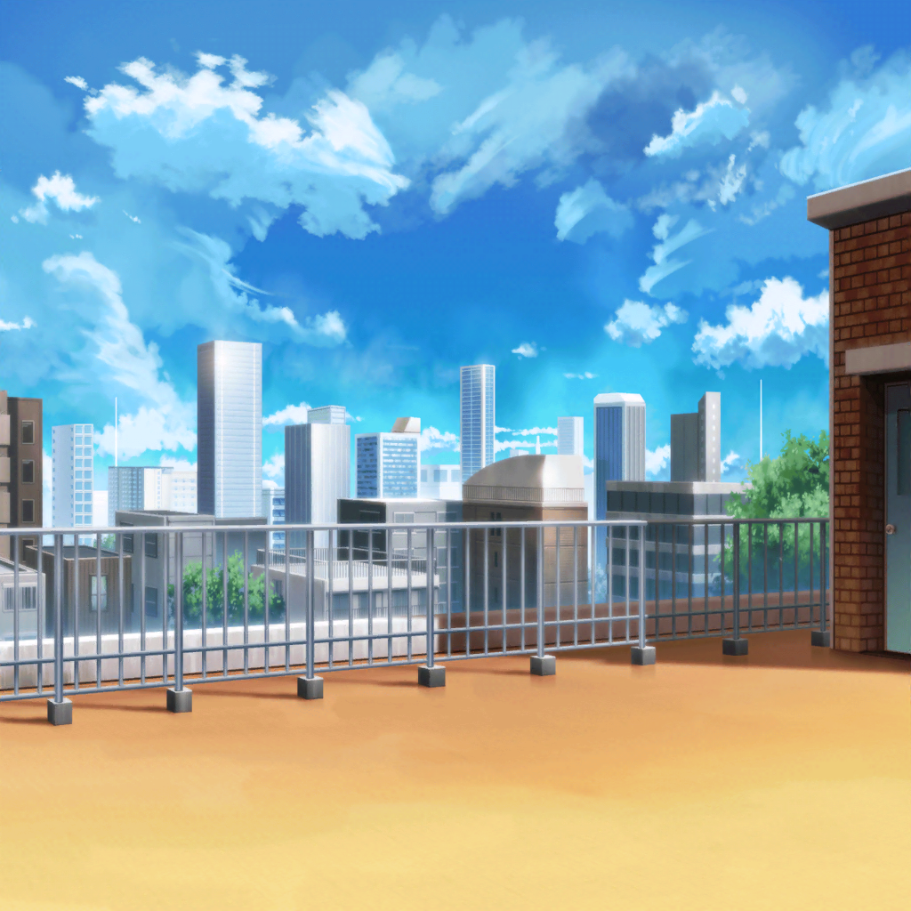

羽丘女子学園 屋上
蘭
えっ、全然調べてない……！？
薫
すまない、蘭ちゃん……
薫
子猫ちゃん達と戯れ、井戸のことを調べるには、
あまりにも昼休みは短く、儚いんだ……
日菜
薫くん、面白かったんだよー！
ちりとりの使い方がこう、シャーンって……
蘭
いや、なんで調べてないんですか？
こっちは昼休み中ずっと調べてたんですけど
日菜
ごめん、あたしも薫くんに夢中で忘れてたよー
薫
観客に時間すら忘れさせる……
それが最高の役者というものさ
蘭
そういう問題じゃなくて……
リサ
まあまあ、そっちの事情はわかったよ
薫
それで、リサ達は何かわかったのかい？
リサ
うん、それがいろいろと……
日菜
ホント？ 聞かせて聞かせて！
リサ
えっと、まずは……
リサ
……という感じだったの。
これってやっぱり井戸に何かあるってことだよね！
日菜
うーん、怖い話があるのはわかったけど……
やっぱり、ただの噂って気がするなー
日菜
だって、あの井戸でなんの事件もなかったんでしょ？
蘭
それはそうなんですけど……
日菜
じゃあ、なにもないよ
蘭
でも、こんなに話が出てくるってことは、
何かあったんじゃないですか？
リサ
そ、そうだよっ！ じゃなきゃおかしいって！
蘭
瀬田さんはどう思います？
薫
そうだね、とても刺激的な話だったよ……
ただの噂にしてはよくできている、という感じかな
リサ
ええ〜？ 薫も信じてないの〜？
薫
お化けなんているわけないさ
日菜
ところで……麻弥ちゃんはどうしたの？
リサ
演劇部の掃除の手伝いに行ったんだけど……時間かかってるね？
蘭
というか、もうお昼休み終わってますけど……
日菜
あ、こういうのホラー映画で見たことある！
単独行動した人って大体可哀想なことになるよねっ！
リサ
ちょ、ちょっと、変なこと言わないでよ……！
蘭
あっ、そういえば、麻弥さん……
井戸のことで何か引っかかってた感じでしたよね？
蘭
もしかして、ひとりで調べに行って……
リサ
調べに行って……？
蘭
井戸に引きずり込まれちゃったんじゃ……
薫・リサ
……！！
薫
い、いや、まさかそんなことがあるわけないさ……
リサ
そ、そうだよ！ ないない！ 絶対ないって！
リサ
……ないよね？
ちょっと電話してみる！
リサ
ど、どうしよ、麻弥が出ない……
日菜
あちゃー、もう井戸のえじきになっちゃったかー
リサ
こ、コラ、ヒナ！
日菜
あはは、じょーだんじょーだん！
日菜
麻弥ちゃんのことだから、掃除に夢中になってるんじゃない？
リサ
だといいけど……
日菜
も〜、そんなに気になるならもう一回、井戸に行ってみようよ
リサ・蘭
ええっ！？
日菜
井戸に行って、なんにもなかったら、安心でしょ？
日菜
というわけで、呪われた井戸にレッツゴー♪
蘭
ま、待って、日菜さん……！
リサ
うわぁ〜、行っちゃった……
薫
仕方がない、私達も行こう……！